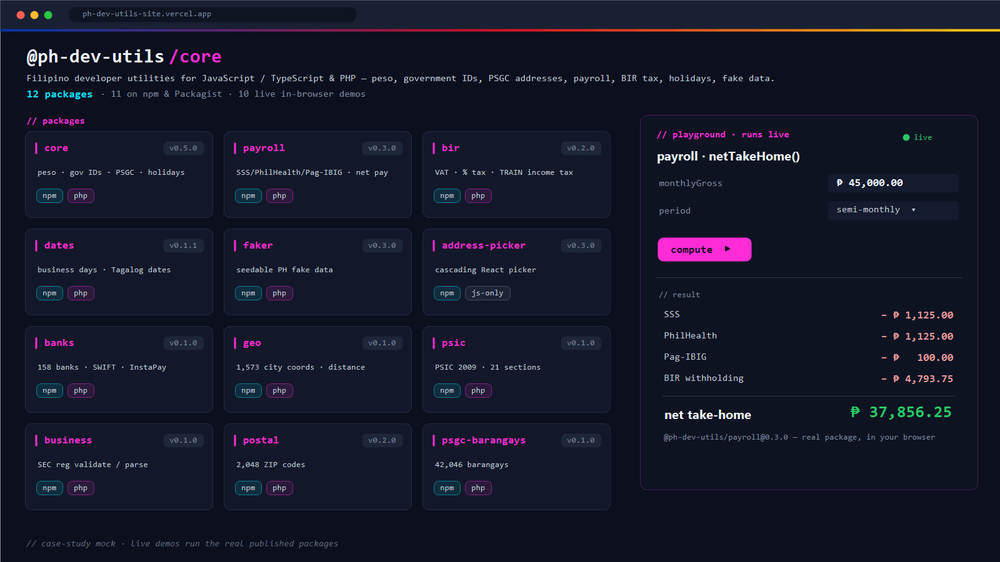

@ph-dev-utils — Filipino Developer Utilities
An open-source family of 12 packages for JS/TS & PHP, with a live in-browser playground
A cohesive family of small, focused packages that ship the Philippine-specific primitives every local app re-implements from scratch — peso formatting, government-ID validation, PSGC address data, ZIP codes, statutory payroll, BIR tax, holidays & Tagalog dates, seedable fake data, and a React address picker. Built with JS ↔ PHP parity so your backend and frontend agree on the same rules, and fronted by a live playground where every demo runs the actual published npm package in the browser — so the showcase doubles as a continuous integration test for the whole family.
Every PH project re-implements peso formatting, TIN/SSS validation, and PSGC dropdowns from scratch — subtly differently each time.
One install — @ph-dev-utils/core — ships the primitives, versioned and validator-checked.
Backend (PHP) and frontend (JS) drift on the same rule — a TIN valid on one side fails on the other.
11 of 12 packages publish identical behavior on both npm and Packagist, so the two sides agree by construction.
A library’s README claims it “works” — you only find out at runtime, in your app.
The showcase imports and runs every package live in the browser — the demos are the integration test.
What it is
@ph-dev-utils is a family of 12 open-source packages that
encode the Philippine-specific logic local apps keep rebuilding: money,
government IDs, addresses, payroll, tax, dates, and reference data. Eleven of
the twelve ship twice — on npm (@ph-dev-utils/*)
for JavaScript/TypeScript and on Packagist
(phdevutils/*) for PHP — with deliberately identical behavior
so a value validated in a Laravel API is validated the same way in a React form.
The site
is two things at once: a landing page that catalogs every package with its
version, highlights, and links, and a live playground where ten of the
twelve packages run interactively in the browser. Crucially the demos are not
mocks — the React app lists the real
@ph-dev-utils/* packages as dependencies and calls them directly,
so the showcase is also the family’s end-to-end smoke test. Built with
React 19, TypeScript, Vite 8 and Tailwind, deployed on Vercel.
The bottleneck
Almost every app built for the Philippine market needs the same primitives, and almost every team re-implements them — usually incompletely, and never the same way twice:
- Peso & number words. “Format as ₱” sounds trivial until you need negative parentheses, parsing back, and the amount spelled out in English and Tagalog for a voucher.
- Government IDs. TIN, SSS, PhilHealth, Pag-IBIG, PhilSys, UMID, passport, PRC, driver’s license, plate — each has its own format, check digits, and edge cases. Most projects validate one or two, badly.
- Addresses. The PSGC hierarchy (region → province → city/municipality → barangay) is large — 42,046 barangays — with NCR, independent cities, and multi-ZIP quirks that naive dropdowns get wrong.
- Payroll & tax. SSS, PhilHealth, Pag-IBIG contribution tables, BIR withholding across four payroll periods, 13th-month and de minimis rules — published in circulars, versioned, and easy to get subtly wrong.
- JS ↔ PHP drift. The same business rule gets coded once in the Laravel backend and again in the JS frontend. They drift. A value that passes server-side validation fails client-side, or vice-versa.
- Trust. Even when a PH utility library exists, you can’t tell from a README whether it actually works for your input without wiring it into your app first.
The goal: a single, cohesive, parity-checked family that covers these primitives once, sourced from authoritative data, published on both ecosystems, and demonstrably working — not asserted-working.
How I broke it down
- Small, focused packages — not one mega-lib. Each
concern is its own package (
core,payroll,bir,dates,banks,geo,psic,business,postal,psgc-barangays,faker,address-picker), so a project pulls in only what it needs and the heavy datasets stay opt-in. - JS ↔ PHP parity as a hard rule. Eleven packages publish on both npm and Packagist with the same function surface and the same outputs. The validators, the peso formatter, the tax math — identical on both runtimes, so backend and frontend can’t disagree.
- Authoritative data, attributed. Address/ZIP/coordinate data comes from GeoNames (CC BY 4.0); the barangay set is PSA Q4 2024; payroll and tax tables follow the published BIR, SSS, PhilHealth, Pag-IBIG and DOLE circulars. Sources are credited; the footer carries a verify-before-prod disclaimer.
- Versioned, not frozen. Contribution and tax tables change by circular, so they’re versioned inside the packages rather than hard-coded as if permanent.
- A showcase that is also a test harness. Rather than write screenshots or recorded demos, the site lists the real packages as dependencies and runs them in the browser. If a published version breaks an API, the playground breaks — visibly — on the next build.
- One source of truth for the catalog. All package metadata (id, npm name, Packagist name, version, tagline, highlights, live-vs-server flag) lives in a single typed array; adding the 13th package is a single structured entry, and every card, link, and anchor is generated from it.
What I built
The 12-package family — grouped by concern:
core(v0.5.0) — the foundation: peso format/parse, English & Tagalog number-words, the full government-ID validator set, phone parse + E.164/national normalize, PSGC regions/provinces/ cities, and PH holidays with DOLE pay multipliers.payroll(v0.3.0) — SSS / PhilHealth / Pag-IBIG contributions, BIR withholding across all four payroll periods, 13th-month, de minimis caps, and a singlenetTakeHome()that goes gross → deductions → net.bir(v0.2.0) — VAT add/extract, percentage tax, and individual income tax (graduated TRAIN vs the 8% option), plus a reference list of common BIR forms.dates(v0.1.1) — holiday-aware business-day math (addBusinessDays,businessDaysBetween) andformatFilipino()for Tagalog month/day names.faker(v0.3.0) — seedable Filipino fake data: names, real PSGC addresses, government IDs that passcore’s validators, and full payslip fixtures.address-picker(v0.3.0) —<PhAddressPicker>React component (plus a headless core and web component) with a searchable typeahead cascade and lazy-loaded barangays over CDN.banks(v0.1.0) — 158 banks/e-money institutions with SWIFT/BIC codes and InstaPay/PESONet participation flags.geo(v0.1.0) — representative coordinates for all 1,573 PSGC cities/municipalities, haversinedistanceKm, andnearestCity/withinRadiusKmhelpers.psic(v0.1.0) — the PSIC 2009 industrial classification (21 sections, 88 divisions) with lookup & search.business(v0.1.0) — validate/parse SEC registration numbers (CS/CN/A/FS/FN/PG prefixes) with canonical formatting.postal(v0.2.0) — 2,048 ZIP/postal codes joined to PSGC cities, zero orphans. Server-side (loads its dataset from disk).psgc-barangays(v0.1.0) — the complete 42,046-barangay dataset (PSA Q4 2024). Server-side — too large to bundle in a browser.
The parity payoff in one snippet — the same call, the same result, on either runtime:
import { formatPeso, validateTIN, numberToWords } from '@ph-dev-utils/core' import { netTakeHome } from '@ph-dev-utils/payroll' formatPeso(1234567.5) // "₱1,234,567.50" numberToWords(1042, 'fil') // "isang libo apatnapu't dalawa" validateTIN('123-456-789-000') // { valid: true, formatted: '123-456-789-000' } // gross → SSS / PhilHealth / Pag-IBIG / BIR withholding → net, in one call const pay = netTakeHome({ monthlyGross: 45000, period: 'semi-monthly' }) // → { sss, philhealth, pagibig, withholdingTax, net } // …and the PHP side agrees, byte-for-byte: // use PhDevUtils\Core\Money; // Money::formatPeso(1234567.5); // "₱1,234,567.50"

Tech
- Site: React 19.2 + TypeScript 6, built with Vite 8, styled with Tailwind CSS 3.4 (custom PH flag palette), deployed on Vercel as a static SPA.
- Packages: TypeScript libraries published to npm under the
@ph-dev-utilsscope; PHP counterparts published to Packagist underphdevutils/*. Most are zero-dependency. - Playground: the site declares the real
@ph-dev-utils/*packages as dependencies and imports them directly — no stubs — so the demos exercise published code. - Data sources: GeoNames (CC BY 4.0) for address/ZIP/coordinates; PSA Q4 2024 for barangays; BIR / SSS / PhilHealth / Pag-IBIG / DOLE circulars for payroll & tax tables.
- Catalog: a single typed
PACKAGES[]array drives every card, badge, anchor and external link on the site.
Results
The family covers the PH primitives end-to-end: roughly ten government-ID validators, the full PSGC address hierarchy down to 42,046 barangays, 2,048 ZIP codes, 1,573 city/municipality coordinates, 158 banking institutions, and the 21-section / 88-division PSIC classification — plus payroll and tax math that goes gross to net in a single call. Eleven of the twelve packages give a PHP backend and a JS frontend the same answer, removing an entire class of “valid here, invalid there” bugs.
Because the public playground runs the real packages, it is also the family’s smoke test: a breaking change in any published version surfaces as a broken demo on the next deploy, not as a surprise in someone’s production app.
What I’d do again — and differently
Worked well:
- Many small packages over one monolith. Projects install only what they need; the 42k-barangay dataset stays an opt-in dependency instead of bloating everyone’s bundle.
- JS ↔ PHP parity as a non-negotiable. Publishing the same behavior on both ecosystems is the single most valuable property — it deletes the backend/frontend drift bug by design.
- Demos that run the published package. Making the showcase import real packages turned marketing into a test harness for free.
- A single typed catalog. One
PACKAGES[]array as the source of truth keeps the site honest — versions and links can’t drift from the cards. - Crediting sources up front. GeoNames / PSA attribution and a verify-before-prod disclaimer set the right expectations for data that changes by government issuance.
Would tighten:
- Automated parity tests. A shared fixture suite run against both the JS and PHP builds in CI would prove parity continuously instead of relying on discipline.
- Pin demos to published versions. The playground tracks the latest packages; pinning each demo to a known-good version would let it double as a regression snapshot per release.
- Freshness stamps on data. A visible “sourced as of” date per dataset (circular version, PSA quarter) would make staleness obvious without reading the changelog.
- Bring the last two packages in-browser.
postalandpsgc-barangaysare server-side today; a chunked/CDN loader could give them live demos like the other ten.